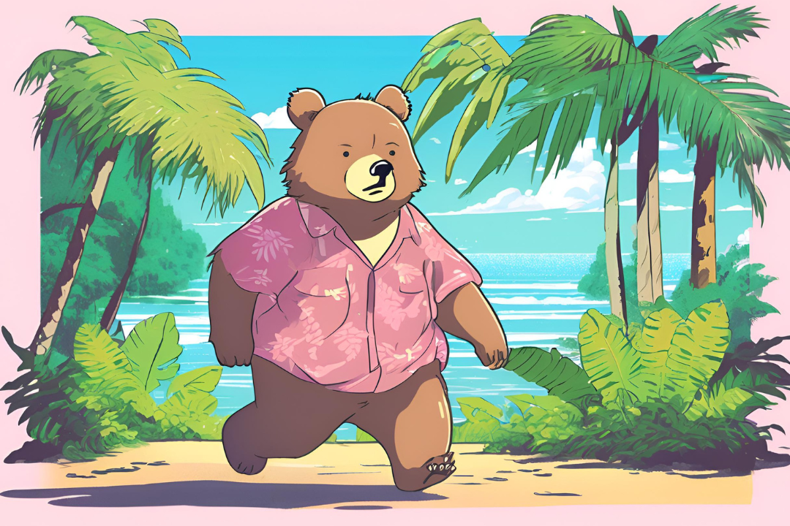
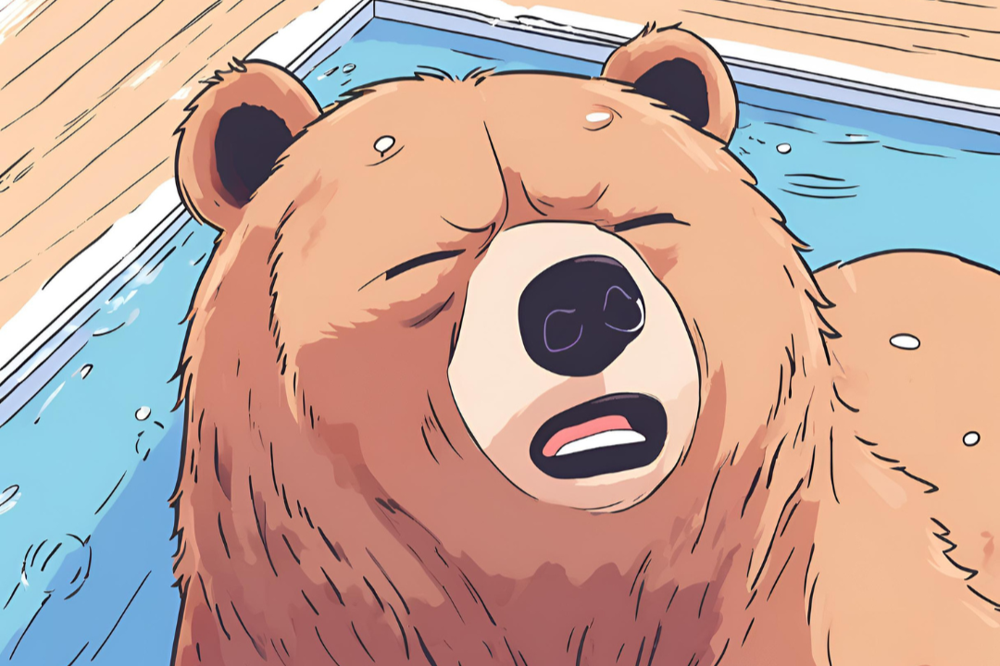
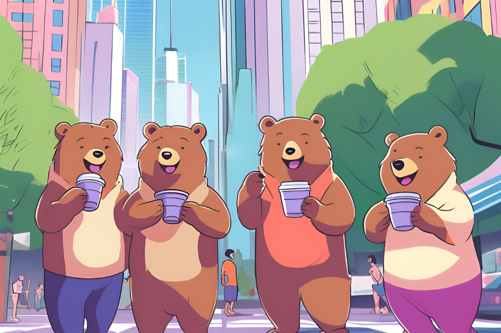

adicione um botao de login e um botao cadastrar na parte superior dessa pagina abaixo da barra de pesquisa dentro do body <!DOCTYPE html>
<html lang="pt-br">
<head>
    <meta charset="UTF-8">
    <meta http-equiv="X-UA-Compatible" content="IE=edge">
    <meta name="viewport" content="width=device-width, initial-scale=1.0">
    <link rel="stylesheet" href="estilos/estilo.css">
    <link rel="stylesheet" href="estilos/geral.css">
    <title>Principal</title>
   <style>
    * {
    padding: 0;
    margin: 0;
    font-family: 'Inter', sans-serif;
}

body {
    width: 100%;
    height: 100vh;
    display: flex;
    justify-content: center;
    align-items: center;
    background: #32b7cb;
}
.slider{
    margin: 0 auto;
    width: 800px;
    height: 400px;
    overflow: hidden;
}
.slides{
    width: 400%;
    height: 400px;
    display: flex;
}
.slides input{
    display: none;
}
.slide{
    width: 25%;
    position: relative;
    transition: 2s;
}
.slide img{
    width: 1080px;
    height: 1080px;
    justify-items: auto;
}
.manual-navigation{
    position: absolute;
    width: 800px;
    margin-top: -40px;
    display: flex;
    justify-content: center;
}
.manual-btn{
    border: 2px solid orange;
    padding: 5px;
    border-radius: 10px;
    cursor:pointer;
    transition: 1s;
}
.manual-btn:not(:last-child){
    margin-right: 40px;
}
.manual-btn:hover{
    background-color: orange;
}
#radio1:checked ~ .first{
    margin-left: 0;
}
#radio2:checked ~ .first{
    margin-left: -25%;
}
#radio3:checked ~ .first{
    margin-left: -50%;
}
#radio4:checked ~ .first{
    margin-left: -75%;
}
.navigation-auto div{
    border: 2px solid #20a6ff;
    padding: 5px;
    border-radius: 10px;
    cursor: pointer;
    transition: 1s;
}
.navigation-auto {
    position: absolute;
    width: 800px;
    margin-top: 360px;
    display: flex;
    justify-content: center;
}
.navigation-auto div:not(:last-child){
    margin-right: 40px;
}
#radio1:checked ~ .navigation-auto .auto-btn1{
    background-color: orange;
}
#radio2:checked ~ .navigation-auto .auto-btn2{
    background-color: orange;
}
#radio3:checked ~ .navigation-auto .auto-btn3{
    background-color: orange;
}
#radio4:checked ~ .navigation-auto .auto-btn4{
    background-color: orange;
}
</style>
    
</head>
<body>
    <header>
        <div class="navbar">
            <span class="menu-toggle">☰</span>
            <div class="menu">
                <a href="Pages/meusdados.html">Meus dados</a>
                <a href="Pages/login.html">Login</a>
                <a href="Pages/cadastro.html">Cadastrar</a>
                <a href="Pages/produtos.html">Escolha o seu açaí</a>
            </div>
            
            <!-- Barra de Pesquisa -->
            <div class="search-bar">
                <input type="text" id="searchInput" placeholder="Pesquisar..." onkeyup="filtrarProdutos()">
                <button onclick="filtrarProdutos()">🔍</button>
            </div>
        </header>
    <div class=slider>
        <div class="slides">
            <input type="radio" name="radio-btn" id="radio1">
            <input type="radio" name="radio-btn" id="radio2">
            <input type="radio" name="radio-btn" id="radio3">
            <input type="radio" name="radio-btn" id="radio4">

            <div class="slide first">
                
            </div>
            <div class ="slide">
                
            </div>
            <div class ="slide">
                
            </div>
            <div class ="slide">
                
            </div>
            <div class="navigation-auto">
                <div class="auto-btn1"></div>
                <div class="auto-btn2"></div>
                <div class="auto-btn3"></div>
                <div class="auto-btn4"></div>
            </div>
        </div>
        <div class="manual-navigation">
            <label for="radio1" class="manual-btn"></label>
            <label for="radio2" class="manual-btn"></label>
            <label for="radio3" class="manual-btn"></label>
            <label for="radio4" class="manual-btn"></label>
        </div>
    </div>
    <script src="script/script.js"></script>
    <script src="script/menu.js"></script>
    <script>
    let count = 1;
document.getElementById("radio1").checked = true;

setInterval( function(){
    nextImage();
},5000)

function nextImage(){
    count++;
    if(count>4){
        count = 1;
    }
    document.getElementById("radio"+count).checked = true;
</script>
}
</body>
<footer>
    <p>&copy; 2025 Açaí do Ted. Todos os direitos reservados.</p>
    <p>Endereço: Rua Jubirasca, 777</p>
    <p>Telefone: 51 3598 1488</p>
    <div>
        <a href="https://instagram.com/sualoja" target="_blank" style="margin: 0 10px;">
            
        </a>
        <a href="https://wa.me/seunumerodetelefone" target="_blank" style="margin: 0 10px;">
            
        </a>
    </div>
</footer>
</html>